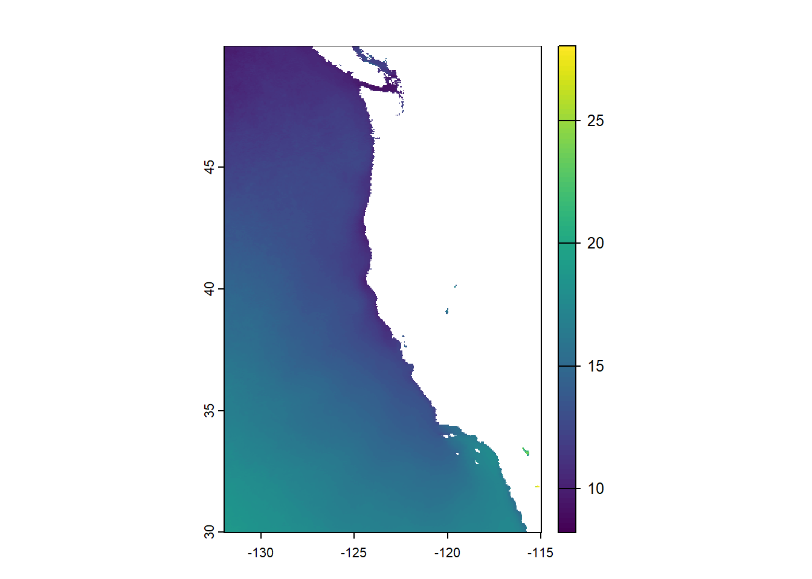
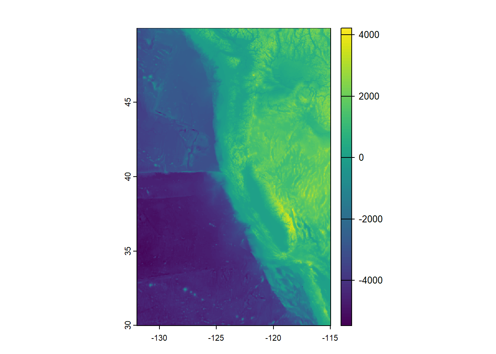

# Load libraries
library(sf)
library(here)
library(terra)
library(tmap)
library(tidyverse)
library(viridisLite)
library(RColorBrewer)
library(kableExtra)
library(testthat)
library(patchwork)
library(testthat)EDS 223: Homework 4
TBD
TIPS FOR HW#4 classify your mean SST raster - you can use mean() on the raster directly
classify your cropped and re sampled depth raster
use lapp() on the classified SST and depth rasters to find locations of suitable aquaculture areas by multiplying the values of the classified raster cells
Then, use mask() to find suitable cells within the EEZa - hint, this is a raster-vector interaction between the cells from lapp() and EEZ vector data
And to find the total suitable area within each EEZ RASTERIZE
cell Size from Terra
Setup
Load Data
# Read in data
west_coast_eez <- read_sf(here("data", "wc_regions_clean.shp"))
depth <- terra::rast(here("data", "depth.tif"))# sst2008 <- terra::rast(here("data", "average_annual_sst_2008.tif"))
# sst2009 <- terra::rast(here("data", "average_annual_sst_2009.tif"))
# sst2010 <- terra::rast(here("data", "average_annual_sst_2010.tif"))
# sst2011 <- terra::rast(here("data", "average_annual_sst_2011.tif"))
# sst2012 <- terra::rast(here("data", "average_annual_sst_2012.tif"))
#
#
#plot(sst)plot(depth)
Prepare data
# Compile all our SST rasters into one object
sst_files <- list.files(here("data"),
pattern = "average",
full.names = TRUE)
# Read in sst data and store as a raster stack
sst_stack <- terra::rast(sst_files)
# Add labels to the raster layers
names(sst_stack) <- c("sst2008", "sst2009", "sst2010", "sst2011", "sst2012")
# Preliminary plot
plot(sst_stack)
# # update layer names to match band
# names(sst_raster) <- c("blue", "green", "red", "NIR", "SWIR1", "SWIR2")
#
# # plot true color image
# plotRGB(sst_raster, r = 3, g = 2, b = 1, stretch = "lin")CRS check
# Confirm that the two raster datasets have the same CRS
if(crs(depth) == crs(sst_stack)) { # Raster data vs raster data
print("Coordinate reference systems match.")
} else{
warning("Updating 'sst_stack' coordinate reference system to match 'depth.'")
sst_stack <- project(sst_stack, crs(depth)) # Project data to match
}
# Confirm that the vector dataset has the same CRS as the raster dataset
if(st_crs(west_coast_eez) == crs(depth)) { # Vector data vs raster data
print("Coordinate reference systems match")
} else{
warning("Updating 'west_coast_eez' coordinate reference system to match 'depth'.")
west_coast_eez <- st_transform(west_coast_eez, st_crs(depth)) # Transform data to match
}# Confirm that any conversions were successful with a test
test_that("CRS of all objects are the same", {
# Check if CRS of sst_stack matches depth
expect_identical(crs(depth), crs(sst_stack),
info = "CRS of 'sst_stack' does not match 'depth'.")
# Check if CRS of west_coast_eez matches depth
expect_identical(st_crs(depth), st_crs(west_coast_eez),
info = "CRS of 'west_coast_eez' does not match 'depth'.")
})Test passed 🎉Process data
find the mean SST from 2008-2012 (e.g. create single raster of average SST) convert average SST from Kelvin to Celsius
Make one raster that is comprised of an average of sea surafce tempertures from 2008 - 2012
# depth <- project(depth, crs("EPSG:4326"))
# sst <- project(sst, crs("EPSG:4326"))
# Find average temperature from 2008-2012
mean_sst <- app(sst_stack, fun = mean)
# Convert units from Kelvin to Celsius
mean_sst <- mean_sst - 273.15
plot(mean_sst)
Remove bathymetry data that does not lie in the same extent as the temperature data
# Crop depth to match the geographic extent of sst
depth_crop <- crop(depth, mean_sst)
# Re-sample depth to match the resolution of sst
depth_resample <- resample(depth_crop, y = mean_sst, method = "near")
plot(depth_resample)
check that the depth and SST match in resolution, extent, and coordinate reference system hint: can the rasters be stacked?
# Stack the two rasters to confirm they are compatible
depth_sst_stack <- c(depth_resample, mean_sst)
# Confirm they have the same resolution, extent, and CRS
if(all(terra::res(depth_resample) == terra::res(mean_sst))) {
if(terra::crs(depth_resample) == terra::crs(mean_sst)) {
if(terra::ext(depth_resample) == terra::ext(mean_sst)){
print("All match")
}else{
stop("extenet does not match")
}
}else{
stop("CRS does not match")
}
}else{
stop("Resolution does not match")
}[1] "All match"Find suitable locations
Oysters
Research has shown that oysters and dungeness crabs need the following conditions for optimal growth:
- sea surface temperature: 11-30°C
- depth: 0-70 meters below sea level
Dungeness Crabs
- sea surface temperature 3°C - 19°C, preferred 9°C
- 5.8 - 9.8, mean 7.8
- depth: 0 - 360 meters below sea level
Reclassify SST and depth data into locations that are suitable for oysters
# Create sst reclassification matrix
rcl_sst <- matrix(c(-Inf, 11, NA, # min temperature
11, 30, 1,
30, Inf, NA), # max temperature
ncol = 3, byrow = TRUE)
# Use reclassification matrix to reclassify sst raster
reclass_sst <- classify(mean_sst, rcl = rcl_sst)# Create depth reclassification matrix
rcl_depth <- matrix(c(-Inf, -70, NA, # min depth
-70, 0, 1,
0, Inf, NA), # max depth
ncol = 3, byrow = TRUE)
# Use reclassification matrix to reclassify depth raster
reclass_depth <- classify(depth_resample, rcl = rcl_depth)# Find locations that satisfy both SST and depth conditions
suitable_sst_depth <- lapp(c(reclass_sst, reclass_depth), fun = "*") # Use multiply function. Only cells that both have a 1 will remain a 1Determine the most suitable EEZ
# Create a raster of the eez data
west_coast_eez_raster <- rasterize(west_coast_eez,
suitable_sst_depth,
field = "rgn") # Transfer the region variable
plot(west_coast_eez_raster)
suitable_area <- cellSize(suitable_sst_depth, # Area that satisifies depth and temperature parameters
mask = TRUE, # Keep NAs in output
unit = "km") # Match units to eez units